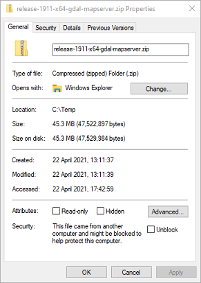
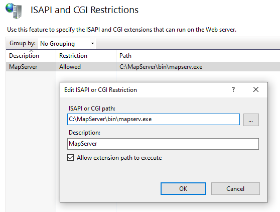
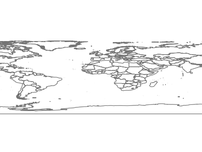
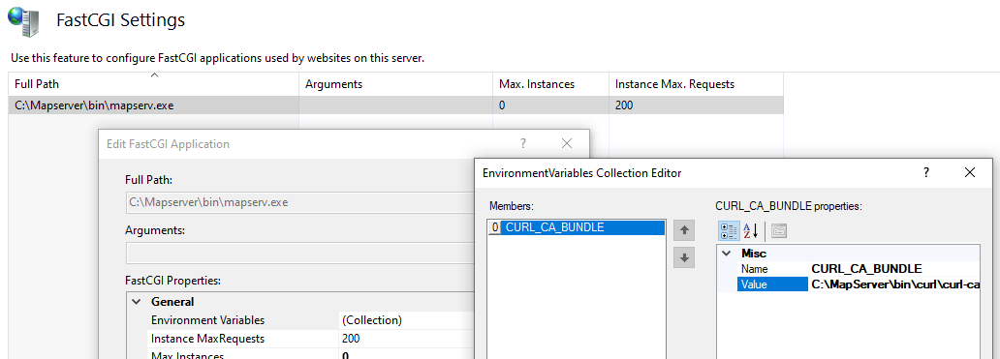

Running MapServer on IIS¶
- Author:
Seth Girvin
- Contact:
sgirvin at compass.ie
- Last Updated:
2022-04-04
This document details how to configure a pre-built version of MapServer to run on IIS (Microsoft’s web server - Internet Information Services). These steps have a minimum requirement of IIS 7 and Windows 7, and have been tested on IIS 10 running on Windows 10.
MapServer can also be run on Windows using MS4W (MapServer for Windows) - which installs its own preconfigured Apache web server, and other related tools such as PHP, TinyOWS, and MapCache. Running MapServer under IIS may be necessary when deploying to servers where the installation of an additional web server is restricted, or where system administrators have more experience maintaining IIS.
Note
The MapServer executables from MS4W can also be used under IIS as well; for more information see the section in MS4W’s README, or ask the MS4W community for assistance (subscribe).
MapServer Set-up¶
Pre-compiled versions of MapServer and GDAL (a required dependency) can be downloaded from http://www.gisinternals.com/release.php. These downloads are built and maintained by Tamas Szekeres a long term contributor to MapServer, and Project Steering Committee (PSC) member.
Note
Which version should I download?
Unless you are using deprecated features in your Mapfiles you should download the latest stable release.
Nearly all servers will now have a x64 (64-bit) architecture, so unless you are restricted to a win32 (32-bit) server download a x64 rather than a win32 release.
Unless you have a good reason you should use the latest compiler version. MSVC 2022 means the binaries were compiled with using Visual C++ 2022.
This installation guide uses the “Compiled binaries in a single .zip package” download (release-1911-x64-gdal-3-2-1-mapserver-7-6-2.zip). There is also a “MapServer installer with IIS registration support” option, which has an inbuilt installer.
Once you have downloaded the zip file follow the steps below.
Unzip the folder to your machine. In this example we will assume it has been unzipped to
C:\MapServer. Make sure that you have “unblocked” the zip, to avoid and security related issues later. Right-click on the zip file, select properties and click the “Unblock” button on the General tab.Test that MapServer is working by double clicking
C:\MapServer\SDKShell.batto start a new Windows command session configured with MapServer environment settings, and then type:mapserv -v
The MapServer version and supported format types should be displayed in the command window.
Configuring with IIS¶
These steps assume IIS 7 or higher is installed on the development machine, and MapServer is using the default website
location of C:\Inetpub\wwwroot. MapServer is installed as a FastCGI application, which improves performance by allowing
MapServer to share objects such as database connections between requests.
All command line steps should be “Run as Administrator” (to select this option this right-click on the
Windows command line icon).
Make sure IIS is on the machine - if you have a folder named C:\Inetpub then it is likely IIS is already installed.
You can install IIS (for Windows 10) from the command line with:
dism /online /enable-feature /featurename:IIS-WebServer
More details on setting up a FastCGI application with IIS can be found in the Microsoft FastCGI documentation.
First copy the required .exes into the same folder as the MapServer DLLs. This can be done using the command below:
xcopy C:\MapServer\bin\ms\apps\* C:\MapServer\bin
Create a new folder
C:\Inetpub\wwwroot\mapservermd C:\Inetpub\wwwroot\mapserverCreate a new, empty
C:\Inetpub\wwwroot\mapserver\web.configfile, and open it (as an administrator) in Notepad:copy NUL C:\Inetpub\wwwroot\mapserver\web.config notepad C:\Inetpub\wwwroot\mapserver\web.configPaste in the following configuration:
<?xml version="1.0" encoding="UTF-8"?> <configuration> <system.webServer> <handlers> <add name="MapServerFastCgi" path="*" verb="*" type="" modules="FastCgiModule" scriptProcessor="C:\Mapserver\bin\mapserv.exe" resourceType="Unspecified" requireAccess="Script" allowPathInfo="true" preCondition="" /> </handlers> <caching enabled="true" enableKernelCache="true" /> </system.webServer> </configuration>
Next set up the web application in IIS:
"%systemroot%\system32\inetsrv\appcmd" add app /site.name:"Default Web Site" /path:/mapserver /physicalPath:"C:\Inetpub\wwwroot\mapserver"
Allow request handlers to be set in the web.config file (above), rather than just at the web site level.
%windir%\system32\inetsrv\appcmd.exe unlock config -section:system.webServer/handlersNext make sure the required IIS CGI module (which includes FastCGI) is installed in IIS with the following command:
Dism /Online /Enable-Feature /FeatureName:IIS-CGI
Note
You can also enable IIS modules through the user interface as follows:
Click “Start button”
In the Search box, enter “Turn windows features on or off”
In the Features window, Click: “Internet Information Services”
Click: “World Wide Web Services”
Click: “Application Development Features”
Check (enable) the features.
IIS may then need to be restarted

Next we set the mapserver.exe to be a FastCGI application and allow it to run in IIS:
"%systemroot%\system32\inetsrv\appcmd" set config -section:system.webServer/fastCgi /+"[fullPath='C:\Mapserver\bin\mapserv.exe']" /commit:apphost "%systemroot%\system32\inetsrv\appcmd" set config /section:isapiCgiRestriction /+"[path='C:\MapServer\bin\mapserv.exe',description='MapServer',allowed='True']"
These settings can also be viewed and configured using IIS Manager:
Test the set-up was successful by entering the following URL in a browser: http://localhost/mapserver/. If the following text is displayed then MapServer has been successfully configured as a FastCGI application in IIS.
No query information to decode. QUERY_STRING is set, but empty.
MapServer Configuration File¶
The MapServer 8.0 release introduced a new CONFIG file. This allows all MapServer global environment variables to be set in a single place, which is easier to manage than IIS FastCGI variables, and more portable between different environments and operating systems.
For this example we will create an empty configuration file at C:\MapServer\apps\mapserver.config. Once the file is created the following sample configuration can be
copied in:
CONFIG
ENV
# allow any map from any location - suitable for development only
MS_MAP_PATTERN "."
# allow maps from anywhere in C:/MapServer/apps/ or subfolders
# MS_MAP_PATTERN "^(C:)?\/MapServer\/apps\/((?!\.{2})[_A-Za-z0-9\-\.]+\/{1})*([_A-Za-z0-9\-\.]+\.(map))$"
# path to the Proj4 projection files
PROJ_LIB "C:/MapServer/bin/proj7/SHARE"
# point to the certs file for HTTPS access to OWS servers
CURL_CA_BUNDLE "C:\MapServer\bin\curl\curl-ca-bundle.crt"
# to set a default Mapfile uncomment below
# MS_MAPFILE "C:/MapServer/apps/test/test.map"
# to block MapServer from accesssing Mapfile by path uncomment below
# MS_MAP_NO_PATH TRUE
END
# allow Mapfiles to be accessed by key
MAPS
"test" "C:/MapServer/apps/tests/test.map"
END
PLUGINS
# new keyed approach to plugins
"mssql" "C:/MapServer/bin/ms/plugins/mssql2008/msplugin_mssql2008.dll"
"oci" "C:/MapServer/bin/ms/plugins/oci/msplugin_oracle.dll"
END
END
An IIS FastCGI environment variable MAPSERVER_CONFIG_FILE however still needs to be created to point to this configuration file. This can be set using IIS Manager, and selecting
Server > FastCGI Settings > C:\MapServer\bin\mapserv.exe > Environment Variables:
Alternatively it can beset from the command line with the following command:
%windir%\system32\inetsrv\appcmd.exe set config -section:system.webServer/fastCgi /+"[fullPath='C:\MapServer\bin\mapserv.exe'].environmentVariables.[name='MAPSERVER_CONFIG_FILE',value='C:\MapServer\apps\mapserver.conf']" /commit:apphost
Setting up Applications¶
MapServer applications consist of a Mapfile, and additional optional files for data, symbols, logs, and images. The same instance of MapServer
can be used to serve many applications. In this example we will create a new test subfolder for a test application in a C:\MapServer\apps folder.
md C:\MapServer\apps\test
Now create a new test.map file in this folder and paste in the test Mapfile below.
copy NUL C:\MapServer\apps\test\test.map
notepad C:\MapServer\apps\test\test.map
MAP
EXTENT -180 -90 180 90
# Set the path to where the map projections are stored
CONFIG "PROJ_LIB" "C:\MapServer\bin\proj\SHARE"
NAME "TestMap"
WEB
METADATA
"ows_enable_request" "*"
END
END
PROJECTION
"init=epsg:4326"
END
LAYER
NAME "country_bounds"
TYPE RASTER
CONNECTION "http://demo.mapserver.org/cgi-bin/wms?"
CONNECTIONTYPE WMS
METADATA
"wms_srs" "epsg:4326"
"wms_name" "country_bounds"
"wms_server_version" "1.1.1"
"wms_format" "image/png"
END
END
END
You should now be able to test the application is accessible through IIS using the following URL to retrieve an image via WMS: http://localhost/mapserver/mapserv?map=C:/MapServer/apps/test/test.map&SERVICE=WMS&VERSION=1.3.0&REQUEST=GetMap&LAYERS=country_bounds&STYLES=&CRS=EPSG:4326&BBOX=-180,-90,180,90&WIDTH=400&HEIGHT=300&FORMAT=image/png
Setting up Logging¶
You can set-up MapServer logging by adding the following lines to your MAP block.
DEBUG 5 # a value from 0 (OFF) to 5 (detailed)
CONFIG "MS_ERRORFILE" "logs\ms.log"
The path to the log file is relative to the Mapfile, so in this example you need to create a new C:\MapServer\apps\test\logs folder:
md C:\MapServer\apps\test\logs
You may need to set read-write permissions on the log file to the IIS application pool user (in this example we are using the default IIS AppPoolDefaultAppPool account under which the MapServer FastCGI runs). In IIS10 the “Authenticated Users” group normally has Modify access to all folders on the C drive, so this step may not be necessary.
icacls "C:\MapServer\apps\test\logs" /grant "IIS AppPool\DefaultAppPool":(OI)(CI)RW
If a different application pool is used, or you don’t set the permissions you will receive the following message
(also check that the C:\MapServer\apps\test\logs folder exists as it will not be created automatically).
msSetErrorFile(): General error message. Failed to open MS_ERRORFILE C:/MapServer/apps/test/logs/ms.log
Further Configuration¶
Note
As of MapServer 8.0 Environment Variables can be set in the CONFIG file rather than as variables in IIS
MapServer makes use of Environment Variables to create application-wide settings. When using IIS these need to be set as FastCGI environment settings, rather than standard system-wide environment variables. Each FastCGI application can be configured with different environment variables and can be modified by IIS Manager, or using the command line.
FastCGI configurations are stored in C:\Windows\System32\inetsrv\config\applicationHost.config in the format below:
<environmentVariables>
<environmentVariable name="CURL_CA_BUNDLE" value="C:\MapServer\bin\curl\curl-ca-bundle.crt" />
</environmentVariables>
Setting a Default Mapfile¶
The MS_MAPFILE environment variable can be set to a default map as follows:
%windir%\system32\inetsrv\appcmd.exe set config -section:system.webServer/fastCgi /+"[fullPath='C:\Mapserver\bin\mapserv.exe'].environmentVariables.[name='MS_MAPFILE',value='C:\MapServer\apps\test\test.map']" /commit:apphost
You can make then make a request without the query string requiring map=C:/MapServer/apps/test/test.map: http://localhost/mapserver/mapserv?SERVICE=WMS&VERSION=1.3.0&REQUEST=GetMap&LAYERS=country_bounds&STYLES=&CRS=EPSG:4326&BBOX=-180,-90,180,90&WIDTH=400&HEIGHT=300&FORMAT=image/png
In addition to this method the URL Rewrite module can be used to set different Mapfiles dependent on query string parameters or domain names.
Setting a Certificates File¶
To access remote data sources via HTTPS (for example when cascading a WMS), you may need to point to a
certificates file. This can be set using the CURL_CA_BUNDLE environment variable:
%windir%\system32\inetsrv\appcmd.exe set config -section:system.webServer/fastCgi /+"[fullPath='C:\Mapserver\bin\mapserv.exe'].environmentVariables.[name='CURL_CA_BUNDLE',value='C:\MapServer\bin\curl\curl-ca-bundle.crt']" /commit:apphost
See Accessing OGC services over HTTPS for further details.
Securing MapServer in IIS¶
MapServer has two environment variables that can be used to restrict which Mapfiles can be accessed.
Note
As of MapServer 8.0 these variables can be set in the CONFIG file rather than as variables in IIS
MS_MAP_NO_PATH can be used to ensure that users can’t provide their own map= parameter to the query string. This can
be set to any value (“True” in this example) so that only the MS_MAPFILE environment value can be used (see “Setting a Default Mapfile” above).
%windir%\system32\inetsrv\appcmd.exe set config -section:system.webServer/fastCgi /+"[fullPath='C:\Mapserver\bin\mapserv.exe'].environmentVariables.[name='MS_MAP_NO_PATH',value='True']" /commit:apphost
MS_MAP_PATTERN can be set to limit the folders from which Mapfiles can be accessed using a regular expression. For example to limit
to the C:\MapServer\apps (note this path is case-sensitive) folder use the following regular expression: "^(C:)?\/MapServer\/apps\/((?!\.{2})[_A-Za-z0-9\-\.]+\/{1})*([_A-Za-z0-9\-\.]+\.(map))$"
%windir%\system32\inetsrv\appcmd.exe set config -section:system.webServer/fastCgi /+"[fullPath='C:\Mapserver\bin\mapserv.exe'].environmentVariables.[name='MS_MAP_PATTERN',value='"^(C:)?\/MapServer\/apps\/((?!\.{2})[_A-Za-z0-9\-\.]+\/{1})*([_A-Za-z0-9\-\.]+\.(map))$"']" /commit:apphost
In addition to these methods IIS itself can be used to block or filter query string parameters. The denyQueryStringSequences element can be set to block a Mapfile being set by a URL. Both map= and the encoded map%3d are blocked.
<?xml version="1.0" encoding="UTF-8"?>
<configuration>
<system.webServer>
<security>
<requestFiltering>
<denyQueryStringSequences>
<add sequence="map=" /> <!-- will return HTTP Error 404.18 - Not Found -->
</denyQueryStringSequences>
</requestFiltering>
</security>
<handlers>
<add name="MapServerFastCgi" path="*" verb="*" type="" modules="FastCgiModule" scriptProcessor="C:\Mapserver\bin\mapserv.exe" resourceType="Unspecified" requireAccess="Script" allowPathInfo="false" preCondition="" responseBufferLimit="4194304" />
</handlers>
<httpErrors errorMode="Detailed" />
</system.webServer>
</configuration>
Troubleshooting¶
Common error messages and how to resolve them are listed below.
If the
MAPSERVER_CONFIG_FILEenvironment variable has not been set in IIS, or it points to a missing or inaccessible file, you will receive the following message:msLoadConfig(): Unable to access file. See mapserver.org/config_file.html for more information.
If the
MAPSERVER_CONFIG_FILEis empty or doesn’t begin withCONFIGyou will receive the following message:msLoadConfig(): Unknown identifier. First token must be CONFIG, this doesn't look like a mapserver config file.
If the
MAPSERVER_CONFIG_FILEhas invalid syntax you will receive a message similar to the following:msLoadConfig(): Unknown identifier. Parsing error near (ENVS):(line 2)
The following error is returned (from MapServer 8.0) if
allowPathInfo="false"is set in thehandlerssection for MapServer in theweb.configfile. This should be set totrue.msLoadMap(): Regular expression error. MS_DEFAULT_MAPFILE_PATTERN validation failed.
If the
CONFIGfile security regular expressions used to limit access to Mapfiles do not match the supplied Mapfile you will receive the following:msCGILoadMap(): Web application error. CGI variable "map" fails to validate.
Check that the file exists if you receive the following error. If it does exist then check the file permissions.
msLoadMap(): Unable to access file. (C:/MapServer/apps/test/test.map)
MapServer projections are stored in
C:\MapServer\bin\proj\SHARE(orC:\MapServer\bin\proj6\SHAREwhen using PROJ 6). When the projection is specified in the following form “init=epsg:3857”, MapServer will try to find this code in the epsg file, where it is listed as <3857> +proj=merc +a=6378137…. If you receive the error below then make sure theCONFIG "PROJ_LIB" "C:\MapServer\bin\proj\SHARE"setting is pointing to the correct path. Note on one installation this message was shown as forward slashes rather than backslashes were used.msProcessProjection(): Projection library error. proj error "No such file or directory" for "init=epsg:3857"
The following error is caused if IIS has been locked-down so settings cannot be overridden at the web.config level.
HTTP Error 500.19 - Internal Server Error The requested page cannot be accessed because the related configuration data for the page is invalid. This configuration section cannot be used at this path. This happens when the section is locked at a parent level. Locking is either by default (overrideModeDefault="Deny"), or set explicitly by a location tag with overrideMode="Deny" or the legacy allowOverride="false".
Run the following in a command window (with administrator permissions). This enables the handlers section in the /mapserver/web.config file to override the ones set at the machine level. See http://stackoverflow.com/questions/9794985/iis-this-configuration-section-cannot-be-used-at-this-path-configuration-lock
%windir%\system32\inetsrv\appcmd.exe unlock config -section:system.webServer/handlersCheck
C:\MapServer\bin\mapserv.exeexists if you encounter the error below.HTTP Error 500.0 - Internal Server Error The FastCGI executable could not be found
To view the CGI applications registered with IIS you can use the command below (this reads the
C:\Windows\System32\inetsrv\config):"%systemroot%\system32\inetsrv\appcmd" list config /section:isapiCgiRestriction
This should output XML similar to below for this section:
<system.webServer> <security> <isapiCgiRestriction> <add path="C:\MapServer\bin\mapserv.exe" allowed="true" description="MapServer" /> </isapiCgiRestriction> </security> </system.webServer>